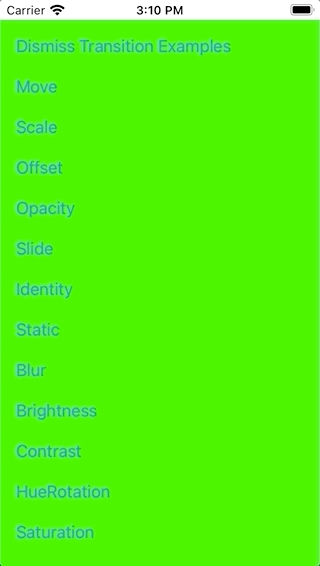
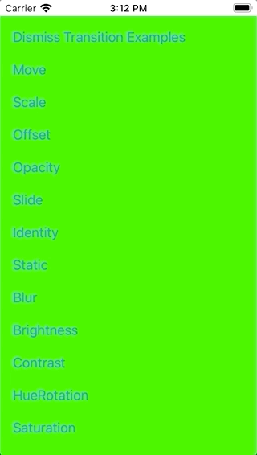

View on GitHub
View on GitHub
 Reference
Reference
Work in progress!


Work in progress!
NavigationStack for SwiftUI
NavigationStack is a custom SwiftUI solution for navigating between views. It’s a more flexible alternative to SwiftUI’s own navigation.
Advantages
Compared to SwiftUI’s NavigationView / NavigationLink and the .sheet-Modifier:
- Use different transition animations (not only a horizontal push/pop or a vertical present/dismiss)
- Use one of the various transition animations included
- Or create your own custom transition animations
- Navigate even without any transition animation at all if you want
- Define the back transition animation right before transitioning back, not in advance when transitioning forward
- Navigate back multiple screens at once, not only to the previous
- Use a full-screen present transition also on iOS 13
Transition Examples
Use SwiftUI’s default transitions:

Or use some default view animations for transitioning:

Or write your own custom transitions:

Installation
CocoaPods
TODO
Usage
Documentation
https://indiesoftware.github.io/NavigationStack
Examples
Clone the repo and open the workspace. The project includes an example target (NavigationStackExample) which shows how to use the library. The example views are provided in the ExampleViews group, just take a look and read the comments there.
The example project also includes some experiments which describe a problem and the attempt to solve this problem. They are kind of a documentation how to solve some strange behaviors of SwiftUI. To run the experiments simply pass the experimen'ts name as launch agrument, e.g. “Experiment1” to run Experiment1.swift.
Trouble shooting
Fatal error: No ObservableObject of type NavigationModel found. A View.environmentObject(_:) for NavigationModel may be missing as an ancestor of this view.
Add a navigation model to the view hierarchy, e.g. MyRootView().environmentObject(NavigationModel()).